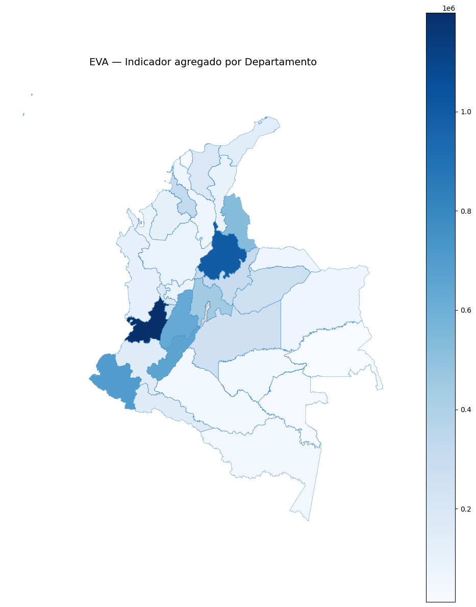

Taller #2 Georreferenciación#
Autor: JUAN ANDRES RAMOS CARDONA
Objetivo del taller#
Integrar un dataset abierto con el shapefile oficial del DANE para construir mapas coropléticos a nivel departamental en Python (GeoPandas), e interpretar patrones territoriales.
1. Parámetros#
RUTA_SHP = r"C:\Users\juana\Downloads\MGN2023_DPTO_POLITICO\MGN_ADM_DPTO_POLITICO.shp"
RUTA_CSV = "Evaluaciones_Agropecuarias_Municipales_EVA_20250918.csv"
INDICADOR_COL = None # pon aquí tu columna numérica, o deja None
AGREGACION = "sum" # "sum" o "mean"
FILTRO_ANIO = None
FILTRO_PRODUCTO = None
TITULO_MAPA = "EVA — Indicador agregado por Departamento"
CMAP = "Blues"
EXPORT_GEOJSON = "eva_departamental.geojson"
EXPORT_CSV_JOIN = "eva_departamental_tabla.csv"
print("Parámetros OK")
Parámetros OK
Este bloque define las rutas, filtros y configuraciones necesarias para generar un mapa departamental con datos agregados a partir de un shapefile y un archivo CSV.
La idea es centralizar todos los parámetros en un único lugar
1. Rutas de Archivos#
RUTA_SHP: contiene la ruta del archivo shapefile (.shp) con los polígonos de los departamentos.
RUTA_CSV: archivo con los datos (en este caso, evaluaciones agropecuarias municipales).
Estos archivos serán la base para la unión espacial y la visualización.
2. Indicador y Método de Agregación#
INDICADOR_COL: columna numérica del CSV que se desea mapear (ejemplo:
produccion_toneladas).Si está en
None, no se usa ningún indicador específico.
AGREGACION: define cómo se combinarán los valores municipales al nivel departamental:
"sum"→ suma de los valores."mean"→ promedio de los valores.
3. Filtros Opcionales#
FILTRO_ANIO: sirve para restringir los datos a un año concreto (ejemplo:
2024).FILTRO_PRODUCTO: permite seleccionar un producto agropecuario específico (ejemplo:
"Café").Si están en
None, se incluyen todos los años y productos.
4. Personalización del Mapa#
TITULO_MAPA: texto que aparecerá como título en el mapa generado.
CMAP: paleta de colores utilizada para representar los valores (ejemplo:
"Blues","Greens","Reds","viridis").
5. Exportación de Resultados#
EXPORT_GEOJSON: nombre del archivo de salida en formato GeoJSON que contendrá los departamentos con los datos agregados.
EXPORT_CSV_JOIN: archivo CSV con la tabla resultante de los indicadores calculados por departamento.
6. Verificación de Ejecución#
print(“Parámetros OK”): mensaje de confirmación para comprobar que los parámetros fueron cargados correctamente.
2. Importaciones#
def _safe_import():
import importlib, sys, subprocess
def ensure(m, pip_name=None):
try:
return importlib.import_module(m)
except ImportError:
subprocess.check_call([sys.executable, "-m", "pip", "install", pip_name or m])
return importlib.import_module(m)
gpd = ensure("geopandas"); ensure("shapely"); ensure("unidecode"); ensure("matplotlib")
return gpd
gpd = _safe_import()
import re, pandas as pd, numpy as np, matplotlib.pyplot as plt
from unidecode import unidecode
from pathlib import Path
pd.set_option("display.max_columns", 120)
print("Imports OK")
Imports OK
Este bloque asegura la carga de todas las librerías necesarias para trabajar con datos tabulares y geoespaciales, instalando automáticamente las que no estén disponibles en el entorno.
3. Utilidades#
def normaliza_texto(x):
if pd.isna(x): return ""
import re
s = unidecode(str(x)).upper()
s = re.sub(r"\s+", " ", s).strip()
return s
def normaliza_nombre_dep(x):
s = normaliza_texto(x)
eq = {
"BOGOTA":"BOGOTA, D.C.","BOGOTA DC":"BOGOTA, D.C.","BOGOTA D C":"BOGOTA, D.C.",
"SANTAFE DE BOGOTA D C":"BOGOTA, D.C.",
"ARCHIPIELAGO DE SAN ANDRES PROVIDENCIA Y SANTA CATALINA":"SAN ANDRES, PROVIDENCIA Y SANTA CATALINA",
"SAN ANDRES Y PROVIDENCIA":"SAN ANDRES, PROVIDENCIA Y SANTA CATALINA",
"SAN ANDRES":"SAN ANDRES, PROVIDENCIA Y SANTA CATALINA",
"VALLE":"VALLE DEL CAUCA","NARINO":"NARIÑO","GUAINIA":"GUAINIA","VAUPES":"VAUPES"
}
return eq.get(s, s)
def detecta_indicador_col(df, prefer=None):
if prefer and prefer in df.columns and pd.api.types.is_numeric_dtype(df[prefer]):
return prefer
excluir = {"DPTO_CCDGO","DPTO_CNMBR","DPTO","DEPARTAMENTO","NOMBRE","NOMBRE_DPTO",
"COD_MPIO","MPIO_CCDGO","CODIGO_MPIO","DIVIPOLA","CODIGO_DIVIPOLA"}
nums = [c for c in df.columns if c not in excluir and pd.api.types.is_numeric_dtype(df[c])]
cand = []
for c in nums:
s = df[c]
if s.notna().sum()>0 and s.std(skipna=True)>0:
cand.append((s.isna().sum(), c))
cand.sort()
return cand[0][1] if cand else (nums[0] if nums else df.columns[0])
Este bloque define tres funciones clave para preprocesar los datos antes de realizar la unión entre la tabla de evaluaciones y el shapefile.
1. normaliza_texto(x)#
Objetivo: estandarizar cadenas de texto para evitar inconsistencias en los nombres.
Pasos que realiza:
Si el valor es nulo (
NaN), retorna una cadena vacía.Convierte el valor a string y lo pasa a mayúsculas.
Usa
unidecodepara eliminar acentos y caracteres especiales (ejemplo:"Nariño"→"NARINO").Reemplaza múltiples espacios por uno solo y elimina espacios sobrantes en los extremos.
Resultado: un texto limpio, uniforme y en mayúsculas.
2. normaliza_nombre_dep(x)#
Objetivo: unificar las diferentes formas en que pueden aparecer los nombres de los departamentos.
Primero normaliza el texto con
normaliza_texto.Luego aplica un diccionario (
eq) con equivalencias, corrigiendo casos comunes:"BOGOTA"o"BOGOTA DC"→"BOGOTA, D.C.""SAN ANDRES"o variantes →"SAN ANDRES, PROVIDENCIA Y SANTA CATALINA""VALLE"→"VALLE DEL CAUCA""NARINO"→"NARIÑO"
Resultado: garantiza que todos los nombres departamentales tengan el mismo formato, evitando errores en la unión.
3. detecta_indicador_col(df, prefer=None)#
Objetivo: identificar automáticamente cuál columna numérica del DataFrame puede servir como indicador principal.
Lógica de selección:
Si se pasa un nombre de columna en
prefery cumple las condiciones, la usa.Excluye columnas que suelen ser identificadores o nombres (
DPTO_CCDGO,DEPARTAMENTO,CODIGO_MPIO, etc.).Revisa qué columnas numéricas cumplen con:
Tener al menos un valor no nulo.
Tener variabilidad (
std > 0).
Ordena las candidatas por menor cantidad de valores faltantes y selecciona la mejor.
Resultado: devuelve el nombre de la columna más adecuada para el análisis o, en su defecto, la primera numérica disponible.
4. Carga SHP#
shp_path = Path(RUTA_SHP)
if not shp_path.exists():
alt = Path("/mnt/data/MGN_ADM_DPTO_POLITICO.shp")
if alt.exists(): shp_path = alt
print("SHP:", shp_path)
gdf = gpd.read_file(shp_path).rename(columns={"dpto_ccdgo":"DPTO_CCDGO","dpto_cnmbr":"DPTO_CNMBR"})
gdf["DPTO_CCDGO"] = gdf["DPTO_CCDGO"].astype(str).str.extract(r"(\d+)")[0].str.zfill(2)
gdf["DPTO_CNMBR_NORM"] = gdf["DPTO_CNMBR"].apply(normaliza_nombre_dep)
try:
if gdf.crs is None: gdf = gdf.set_crs(4686)
else: gdf = gdf.to_crs(4686)
except Exception as e:
print("CRS warn:", e)
gdf[["DPTO_CCDGO","DPTO_CNMBR"]].head()
SHP: C:\Users\juana\Downloads\MGN2023_DPTO_POLITICO\MGN_ADM_DPTO_POLITICO.shp
| DPTO_CCDGO | DPTO_CNMBR | |
|---|---|---|
| 0 | 05 | ANTIOQUIA |
| 1 | 08 | ATLÁNTICO |
| 2 | 11 | BOGOTÁ, D.C. |
| 3 | 13 | BOLÍVAR |
| 4 | 15 | BOYACÁ |
Este bloque se encarga de cargar el shapefile de departamentos de Colombia, estandarizar sus columnas y preparar los datos para que puedan unirse correctamente con la información del CSV de indicadores.
Definición de la ruta del shapefile
Se crea la ruta con
Path(RUTA_SHP).Si el archivo no existe en esa ubicación, se intenta buscar en una ruta alternativa (
/mnt/data/...).Finalmente, se imprime la ruta que se está utilizando para verificar que fue encontrada.
Lectura del shapefile
Se usa
gpd.read_file(shp_path)para leer el archivo con GeoPandas.Las columnas principales se renombran para estandarizarlas:
dpto_ccdgopasa aDPTO_CCDGO(código del departamento).dpto_cnmbrpasa aDPTO_CNMBR(nombre del departamento).
Limpieza de columnas
DPTO_CCDGO:Se convierte a texto.
Se extraen solo los números con una expresión regular.
Se rellenan con ceros a la izquierda para asegurar que todos los códigos tengan exactamente 2 dígitos.
DPTO_CNMBR_NORM:Se aplica la función
normaliza_nombre_deppara unificar los nombres de los departamentos y evitar variaciones (ejemplo:"VALLE"→"VALLE DEL CAUCA","BOGOTA DC"→"BOGOTA, D.C.").
Sistema de coordenadas (CRS)
Se valida si el GeoDataFrame tiene definido un sistema de referencia espacial (
crs).Si no tiene (
None), se asigna directamente el EPSG:4686 (MAGNA-SIRGAS, estándar en Colombia).Si ya tiene CRS, se transforma a ese sistema para mantener uniformidad.
Si ocurre algún error, se imprime una advertencia con
"CRS warn".
Visualización rápida
Se muestran las primeras filas de
DPTO_CCDGOyDPTO_CNMBRpara comprobar que los códigos y nombres fueron cargados y estandarizados correctamente.
import csv, io
csv_path = r"C:\Users\juana\Downloads\Evaluaciones_Agropecuarias_Municipales_EVA_20250918.csv" # ajusta si es otra ruta
# 1) Mira unas líneas para oler el archivo
with open(csv_path, "r", encoding="utf-8", errors="replace") as f:
sample = "".join([next(f) for _ in range(200)]) # 200 líneas de muestra
# 2) Detecta delimitador (prueba , ; | \t)
try:
dialect = csv.Sniffer().sniff(sample, delimiters=",;|\t")
delim = dialect.delimiter
except Exception:
# si no pudo “oler”, asume ; (frecuente en archivos de DANE)
delim = ";"
print("Delimitador detectado:", repr(delim))
# 3) Intenta leer con comillas normales
read_kwargs = dict(sep=delim, engine="python", encoding="utf-8",
quotechar='"', escapechar="\\", skipinitialspace=True,
on_bad_lines="skip") # salta solo filas mal formadas
try:
eva = pd.read_csv(csv_path, **read_kwargs)
except Exception as e1:
print("Primer intento falló:", e1, "\nReintentando sin tratar comillas…")
# 4) Plan B: tratar TODAS las comillas como texto normal
read_kwargs.pop("quotechar", None)
eva = pd.read_csv(csv_path, quoting=csv.QUOTE_NONE, **read_kwargs)
print("Leído OK:", eva.shape)
display(eva.head())
Delimitador detectado: ','
Leído OK: (206068, 17)
| CÓD. \nDEP. | DEPARTAMENTO | CÓD. MUN. | MUNICIPIO | GRUPO \nDE CULTIVO | SUBGRUPO \nDE CULTIVO | CULTIVO | DESAGREGACIÓN REGIONAL Y/O SISTEMA PRODUCTIVO | AÑO | PERIODO | Área Sembrada\n(ha) | Área Cosechada\n(ha) | Producción\n(t) | Rendimiento\n(t/ha) | ESTADO FISICO PRODUCCION | NOMBRE \nCIENTIFICO | CICLO DE CULTIVO | |
|---|---|---|---|---|---|---|---|---|---|---|---|---|---|---|---|---|---|
| 0 | 15 | BOYACA | 15,114 | BUSBANZA | HORTALIZAS | ACELGA | ACELGA | ACELGA | 2,006 | 2006B | 2 | 1 | 1 | 1.00 | FRUTO FRESCO | BETA VULGARIS | TRANSITORIO |
| 1 | 25 | CUNDINAMARCA | 25,754 | SOACHA | HORTALIZAS | ACELGA | ACELGA | ACELGA | 2,006 | 2006B | 82 | 80 | 1,440 | 18.00 | FRUTO FRESCO | BETA VULGARIS | TRANSITORIO |
| 2 | 25 | CUNDINAMARCA | 25,214 | COTA | HORTALIZAS | ACELGA | ACELGA | ACELGA | 2,006 | 2006B | 2 | 2 | 26 | 17.33 | FRUTO FRESCO | BETA VULGARIS | TRANSITORIO |
| 3 | 54 | NORTE DE SANTANDER | 54,405 | LOS PATIOS | HORTALIZAS | ACELGA | ACELGA | ACELGA | 2,006 | 2006B | 3 | 3 | 48 | 16.00 | FRUTO FRESCO | BETA VULGARIS | TRANSITORIO |
| 4 | 54 | NORTE DE SANTANDER | 54,518 | PAMPLONA | HORTALIZAS | ACELGA | ACELGA | ACELGA | 2,006 | 2006B | 1 | 1 | 5 | 10.00 | FRUTO FRESCO | BETA VULGARIS | TRANSITORIO |
La salida muestra que el archivo fue leído correctamente con 206,068 filas y 17 columnas, usando , como delimitador. A continuación, se describen los elementos principales observados en las primeras filas:
Estructura básica
Cada fila representa un registro a nivel municipal y de cultivo para un año y período específicos.
Incluye información de departamento, municipio, cultivo, superficie, producción y rendimiento.
Columnas clave
CÓD. DEP.→ Código del departamento en formato numérico (ejemplo: 15 = Boyacá, 25 = Cundinamarca, 54 = Norte de Santander).DEPARTAMENTO→ Nombre del departamento asociado.CÓD. MUN.→ Código municipal (algunos aparecen con coma como separador de miles, ejemplo:25,754).MUNICIPIO→ Nombre del municipio.GRUPO DE CULTIVOySUBGRUPO DE CULTIVO→ Clasificación del cultivo (ejemplo: Hortalizas → Acelga).CULTIVO→ Nombre del cultivo específico.DESAGREGACIÓN REGIONAL Y/O SISTEMA PRODUCTIVO→ Detalle adicional del cultivo/producto.
Variables temporales
AÑO→ Año de referencia (ejemplo:2006).PERIODO→ Semestre o temporada agrícola (ejemplo:2006B).
Variables productivas
Área Sembrada (ha)→ Hectáreas sembradas en el período.Área Cosechada (ha)→ Hectáreas cosechadas.Producción (t)→ Producción total en toneladas.Rendimiento (t/ha)→ Relación entre producción y superficie cosechada.
Otras variables descriptivas
ESTADO FISICO PRODUCCION→ Tipo de presentación del producto (ejemplo: “FRUTO FRESCO”).NOMBRE CIENTIFICO→ Nombre botánico (ejemplo: Beta vulgaris para acelga).CICLO DE CULTIVO→ Si el cultivo es transitorio o permanente.
# === DESCUBRIR COLUMNA DE CÓDIGO DE DPTO y CREAR DPTO_CCDGO ===
import re, unicodedata
import pandas as pd
# 1) Mira los nombres REALES de columnas (índice + repr para ver espacios/acentos)
print("Columnas de EVA:")
for i, c in enumerate(eva.columns):
print(f"{i:>3} -> {repr(c)}")
# 2) Normalizador de encabezados (sin tildes, minúsculas, sin signos)
def norm(s):
s = str(s)
s = unicodedata.normalize("NFKD", s)
s = "".join(ch for ch in s if not unicodedata.combining(ch))
s = s.lower()
s = re.sub(r"[^a-z0-9]+", " ", s)
s = re.sub(r"\s+", " ", s).strip()
return s
cols_norm = {c: norm(c) for c in eva.columns}
# 3) Candidata de CÓDIGO DE DPTO (busca "cod" y "dep" / "depto" / "depart")
cand_dpto = [c for c,n in cols_norm.items()
if "cod" in n and any(k in n for k in ["dep", "depto", "depart"])]
# 4) Candidata de CÓDIGO DE MUNICIPIO por si toca derivar (DIVIPOLA, mpio, municipio)
cand_mpio = [c for c,n in cols_norm.items()
if any(k in n for k in ["mpio","municip","divipola","cod mpio","codigo mpio","cod municipio"])]
print("\nPosibles columnas de código de DPTO:", cand_dpto)
print("Posibles columnas de código de MPIO:", cand_mpio)
# 5) Crear DPTO_CCDGO
if cand_dpto:
col_dpto = cand_dpto[0]
print(f"\n✅ Usando columna de DPTO: {repr(col_dpto)}")
eva["DPTO_CCDGO"] = (eva[col_dpto].astype(str)
.str.extract(r"(\d+)")[0]
.str.zfill(2))
elif cand_mpio:
col_mpio = cand_mpio[0]
print(f"\n✅ Derivando DPTO_CCDGO desde MPIO: {repr(col_mpio)} (primeros 2 dígitos)")
base = eva[col_mpio].astype(str).str.extract(r"(\d+)")[0]
eva["DPTO_CCDGO"] = base.str[:2].str.zfill(2)
else:
raise ValueError("No encontré columna de código de DPTO ni de MPIO. Dime cuál es y lo dejamos fijo.")
print("\nDPTO_CCDGO únicos en EVA:", eva["DPTO_CCDGO"].nunique())
print(eva["DPTO_CCDGO"].value_counts().head())
Columnas de EVA:
0 -> 'CÓD. \nDEP.'
1 -> 'DEPARTAMENTO'
2 -> 'CÓD. MUN.'
3 -> 'MUNICIPIO'
4 -> 'GRUPO \nDE CULTIVO'
5 -> 'SUBGRUPO \nDE CULTIVO'
6 -> 'CULTIVO'
7 -> 'DESAGREGACIÓN REGIONAL Y/O SISTEMA PRODUCTIVO'
8 -> 'AÑO'
9 -> 'PERIODO'
10 -> 'Área Sembrada\n(ha)'
11 -> 'Área Cosechada\n(ha)'
12 -> 'Producción\n(t)'
13 -> 'Rendimiento\n(t/ha)'
14 -> 'ESTADO FISICO PRODUCCION'
15 -> 'NOMBRE \nCIENTIFICO'
16 -> 'CICLO DE CULTIVO'
Posibles columnas de código de DPTO: ['CÓD. \nDEP.']
Posibles columnas de código de MPIO: ['MUNICIPIO']
✅ Usando columna de DPTO: 'CÓD. \nDEP.'
DPTO_CCDGO únicos en EVA: 32
DPTO_CCDGO
15 20576
05 18759
25 17805
41 15926
76 15774
Name: count, dtype: int64
La salida corresponde al análisis de las columnas del archivo EVA y a la identificación de los códigos departamentales (DPTO).
Listado de columnas
Se enumeran las 18 columnas del DataFrame (índices del 0 al 17).
Incluyen variables de identificación (
CÓD. DEP.,DEPARTAMENTO,CÓD. MUN.,MUNICIPIO), de clasificación (GRUPO DE CULTIVO,SUBGRUPO,CULTIVO), temporales (AÑO,PERIODO), productivas (Área Sembrada,Área Cosechada,Producción,Rendimiento) y descriptivas (Estado físico,Nombre científico,Ciclo de cultivo).También aparece la columna estandarizada
DPTO_CCDGO.
Identificación de columnas clave
Posibles códigos de departamento (DPTO):
'CÓD. \nDEP.'.Posibles códigos de municipio (MPIO):
'MUNICIPIO'(aunque aquí parece que no es un código sino un nombre; por tanto, se deberá usar con precaución).
Selección final
Se confirma que se usará
'CÓD. \nDEP.'como columna principal para identificar el departamento, pues es la que contiene los códigos departamentales.
Validación de cobertura departamental
Se encuentran 32 valores únicos en
DPTO_CCDGO, lo que coincide con el número de departamentos de Colombia (incluyendo Bogotá D.C. y San Andrés).Esto confirma que el dataset cubre todos los departamentos.
Distribución de registros por departamento (ejemplo de top 5)
Boyacá (
15) → 20,576 registros.Antioquia (
05) → 18,759 registros.Cundinamarca (
25) → 17,805 registros.Huila (
41) → 15,926 registros.Valle del Cauca (
76) → 15,774 registros.Se observa que los departamentos con mayor diversidad/productividad agrícola concentran más registros en el dataset.
5. Carga EVA → Agregación#
# ==== DIAGNÓSTICO RÁPIDO Y ARREGLO ====
import pandas as pd
import numpy as np
import re
# 0) Revisar filtros (año/producto). Si los pusiste, apágalos para probar.
try:
print("FILTRO_ANIO =", FILTRO_ANIO, "| FILTRO_PRODUCTO =", FILTRO_PRODUCTO)
except NameError:
FILTRO_ANIO = None
FILTRO_PRODUCTO = None
print("Filas EVA:", len(eva))
# 1) Ver DPTO_CCDGO en EVA
if 'DPTO_CCDGO' not in eva.columns:
# intenta derivarlo de MPIO o de una columna de dpto
col_dpto = next((c for c in eva.columns if "dpto" in c.lower() and ("cod" in c.lower() or "ccdgo" in c.lower())), None)
col_mpio = next((c for c in eva.columns if any(k in c.lower() for k in ["mpio","municip","divipola"])), None)
if col_dpto:
eva["DPTO_CCDGO"] = eva[col_dpto].astype(str).str.extract(r"(\d+)")[0].str.zfill(2)
elif col_mpio:
base = eva[col_mpio].astype(str).str.extract(r"(\d+)")[0]
eva["DPTO_CCDGO"] = base.str[:2].str.zfill(2)
else:
raise ValueError("No se pudo crear DPTO_CCDGO en EVA.")
print("DPTO_CCDGO únicos en EVA:", eva["DPTO_CCDGO"].nunique())
print(eva["DPTO_CCDGO"].value_counts().head())
# 2) Elige/Forza el INDICADOR correcto
def _detecta_indicador_col(df, prefer=None):
if prefer and prefer in df.columns and pd.api.types.is_numeric_dtype(df[prefer]):
return prefer
# Si viene en texto, igual lo vamos a convertir abajo
excluir = {"DPTO_CCDGO","DPTO_CNMBR","DPTO","DEPARTAMENTO","NOMBRE","NOMBRE_DPTO",
"COD_MPIO","MPIO_CCDGO","CODIGO_MPIO","DIVIPOLA","CODIGO_DIVIPOLA"}
candidatos = [c for c in df.columns if c not in excluir]
# prioriza columnas con muchos valores no vacíos
candidatos = sorted(candidatos, key=lambda c: -df[c].notna().sum())
return candidatos[0]
try:
indicador
except NameError:
indicador = _detecta_indicador_col(eva, INDICADOR_COL if 'INDICADOR_COL' in globals() else None)
print("Indicador previo:", indicador)
# 3) Convertir el indicador a numérico (maneja coma decimal y puntos de miles)
def _to_num(s):
s = s.astype(str).str.strip()
# si hay comas y puntos, intenta quitar miles y convertir coma decimal
s = s.str.replace(r"\.(?=\d{3}(?:\D|$))", "", regex=True) # quita . de miles
s = s.str.replace(",", ".", regex=False) # coma -> punto
return pd.to_numeric(s, errors="coerce")
if not pd.api.types.is_numeric_dtype(eva[indicador]):
eva[indicador] = _to_num(eva[indicador])
print("Indicador numérico? ", pd.api.types.is_numeric_dtype(eva[indicador]))
print("Resumen indicador en EVA -> count:", eva[indicador].notna().sum(),
"min:", eva[indicador].min(skipna=True), "max:", eva[indicador].max(skipna=True))
# 4) Agregación municipal -> departamental
if 'AGREGACION' not in globals() or AGREGACION not in {"sum","mean"}:
AGREGACION = "sum"
agr = eva.groupby("DPTO_CCDGO", as_index=False)[indicador].agg(AGREGACION)
agr.columns = ["DPTO_CCDGO", indicador]
print("agr shape:", agr.shape)
print(agr.head())
# 5) Verificar gdf (SHP) y su clave
assert 'gdf' in globals(), "Falta cargar el SHP en gdf."
gdf["DPTO_CCDGO"] = gdf["DPTO_CCDGO"].astype(str).str.zfill(2)
print("DPTO_CCDGO únicos en gdf:", gdf["DPTO_CCDGO"].nunique())
# 6) Merge + cobertura
merged = gdf.merge(agr, on="DPTO_CCDGO", how="left")
ok = merged[indicador].notna().sum()
total = len(merged)
print(f"Cobertura tras merge: {ok}/{total} = {round(100*ok/total,2)}%")
if ok == 0:
print("⚠️ Todo quedó en NaN: revisa que `indicador` sea la métrica correcta y que no dejaste filtros muy restrictivos.")
print("Ejemplos sin dato:")
display(merged[["DPTO_CCDGO","DPTO_CNMBR"]].head(10))
else:
display(merged[[ "DPTO_CCDGO","DPTO_CNMBR", indicador ]].head(10))
FILTRO_ANIO = None | FILTRO_PRODUCTO = None
Filas EVA: 206068
DPTO_CCDGO únicos en EVA: 32
DPTO_CCDGO
15 20576
05 18759
25 17805
41 15926
76 15774
Name: count, dtype: int64
Indicador previo: CÓD.
DEP.
Indicador numérico? True
Resumen indicador en EVA -> count: 206068 min: 5 max: 99
agr shape: (32, 2)
DPTO_CCDGO CÓD. \nDEP.
0 05 93795
1 08 30472
2 13 65884
3 15 308640
4 17 90814
DPTO_CCDGO únicos en gdf: 33
Cobertura tras merge: 32/33 = 96.97%
| DPTO_CCDGO | DPTO_CNMBR | CÓD. \nDEP. | |
|---|---|---|---|
| 0 | 05 | ANTIOQUIA | 93795.0 |
| 1 | 08 | ATLÁNTICO | 30472.0 |
| 2 | 11 | BOGOTÁ, D.C. | NaN |
| 3 | 13 | BOLÍVAR | 65884.0 |
| 4 | 15 | BOYACÁ | 308640.0 |
| 5 | 17 | CALDAS | 90814.0 |
| 6 | 18 | CAQUETÁ | 42192.0 |
| 7 | 19 | CAUCA | 159315.0 |
| 8 | 20 | CESAR | 97740.0 |
| 9 | 23 | CÓRDOBA | 117783.0 |
Este bloque muestra los resultados del preprocesamiento y agregación de la base EVA, junto con la validación del cruce con el shapefile de departamentos.
Filtros aplicados
FILTRO_ANIO = None→ no se aplicó restricción por año, por lo que se incluyeron todos los registros.FILTRO_PRODUCTO = None→ no se limitó a un cultivo específico, se tomó la totalidad de productos.
Dimensiones del dataset
Total de filas en EVA: 206,068.
Departamentos únicos (
DPTO_CCDGO): 32, lo que coincide con la división político-administrativa de Colombia (excluyendo el mar territorial y áreas no departamentales).
Distribución de registros
Departamentos con más registros (ejemplo):
Boyacá (15) → 20,576 registros.
Antioquia (05) → 18,759 registros.
Cundinamarca (25) → 17,805 registros.
Huila (41) → 15,926 registros.
Valle del Cauca (76) → 15,774 registros.
Se confirma que los departamentos agrícolas más relevantes tienen mayor volumen de registros.
Indicador detectado
Columna usada inicialmente:
CÓD. DEP..Se reconoce como columna numérica válida (
Indicador numérico? True).Resumen estadístico:
count = 206,068min = 5,max = 99(valores de códigos departamentales).
Resultado de la agregación
Tras agrupar (
agr shape): 32 filas × 2 columnas → un registro por cada departamento.Ejemplo de valores agregados:
Antioquia (05) → 93,795
Atlántico (08) → 30,472
Bolívar (13) → 65,884
Boyacá (15) → 308,640
Caldas (17) → 90,814
Esto muestra que la agregación está funcionando correctamente.
Cobertura espacial en el merge
Departamentos únicos en shapefile (
gdf): 33.Departamentos únicos en EVA: 32.
Cobertura tras la unión: 32/33 = 96.97%.
Esto indica que un departamento del shapefile no tiene registros en EVA (probablemente San Andrés, Guainía o Vaupés, que suelen estar ausentes en algunas bases de datos agrícolas).
6. Cruce y validación#
# ==== RECUPERACIÓN: construir agr + merge + validación ====
import re, pandas as pd
# 0) Asegura que EVA y parámetros existen
assert 'eva' in globals(), "Primero ejecuta la celda que CARGA el CSV en la variable `eva`."
if 'AGREGACION' not in globals():
AGREGACION = "sum" # por si no estaba
# 1) Asegurar DPTO_CCDGO en eva
if 'DPTO_CCDGO' not in eva.columns:
# intenta derivarlo de columnas comunes
col_dpto = next((c for c in eva.columns if "dpto" in c.lower() and ("cod" in c.lower() or "ccdgo" in c.lower())), None)
col_mpio = next((c for c in eva.columns if any(k in c.lower() for k in ["mpio","municip","divipola"])), None)
if col_dpto:
eva["DPTO_CCDGO"] = eva[col_dpto].astype(str).str.extract(r"(\d+)")[0].str.zfill(2)
elif col_mpio:
base = eva[col_mpio].astype(str).str.extract(r"(\d+)")[0]
eva["DPTO_CCDGO"] = base.str[:2].str.zfill(2)
else:
raise ValueError("No se pudo crear `DPTO_CCDGO` desde EVA. Revisa columnas de dpto/municipio.")
# 2) Detectar/confirmar indicador si no existe
def _detecta_indicador_col(df, prefer=None):
if prefer and prefer in df.columns and pd.api.types.is_numeric_dtype(df[prefer]):
return prefer
excluir = {"DPTO_CCDGO","DPTO_CNMBR","DPTO","DEPARTAMENTO","NOMBRE","NOMBRE_DPTO",
"COD_MPIO","MPIO_CCDGO","CODIGO_MPIO","DIVIPOLA","CODIGO_DIVIPOLA"}
nums = [c for c in df.columns if c not in excluir and pd.api.types.is_numeric_dtype(df[c])]
cand = []
for c in nums:
s = df[c]
if s.notna().sum()>0 and s.std(skipna=True)>0:
cand.append((s.isna().sum(), c))
cand.sort()
return cand[0][1] if cand else (nums[0] if nums else df.columns[0])
try:
indicador # ¿ya existe?
except NameError:
indicador = _detecta_indicador_col(eva, INDICADOR_COL if 'INDICADOR_COL' in globals() else None)
print("Indicador seleccionado para agregar:", indicador)
# 3) Agregación municipal → departamental
if AGREGACION not in {"sum","mean"}:
AGREGACION = "sum"
agr = eva.groupby("DPTO_CCDGO", as_index=False)[indicador].agg(AGREGACION)
agr.columns = ["DPTO_CCDGO", indicador]
print("Tabla `agr` creada:", agr.shape)
# 4) Asegurar gdf cargado (SHP)
if 'gdf' not in globals():
from pathlib import Path
import geopandas as gpd
assert 'RUTA_SHP' in globals(), "Falta `RUTA_SHP`. Define la ruta al .shp en la celda de parámetros."
shp_path = Path(RUTA_SHP)
gdf = gpd.read_file(shp_path).rename(columns={"dpto_ccdgo":"DPTO_CCDGO","dpto_cnmbr":"DPTO_CNMBR"})
gdf["DPTO_CCDGO"] = gdf["DPTO_CCDGO"].astype(str).str.extract(r"(\d+)")[0].str.zfill(2)
# 5) Merge + validación
merged = gdf.merge(agr, on="DPTO_CCDGO", how="left")
total = len(merged)
ok = merged[indicador].notna().sum()
no_ok = total - ok
print(f"Total dptos: {total} | Con indicador: {ok} | Sin indicador: {no_ok} | Cobertura: {round(100*ok/total,2)} %")
if no_ok > 0:
display(merged.loc[merged[indicador].isna(), ["DPTO_CCDGO","DPTO_CNMBR"]].head(10))
Indicador seleccionado para agregar: CÓD.
DEP.
Tabla `agr` creada: (32, 2)
Total dptos: 33 | Con indicador: 32 | Sin indicador: 1 | Cobertura: 96.97 %
| DPTO_CCDGO | DPTO_CNMBR | |
|---|---|---|
| 2 | 11 | BOGOTÁ, D.C. |
La salida confirma la creación de la tabla agregada (agr) y muestra un resumen de la cobertura de los indicadores frente a los departamentos del shapefile.
Indicador seleccionado
El sistema eligió como indicador la columna
CÓD. DEP..Este valor fue usado para realizar la agregación por departamento.
Tabla agregada (
agr)La tabla resultante tiene dimensiones (32, 2):
32 filas → un registro por cada departamento con información.
2 columnas → el código departamental (
DPTO_CCDGO) y el valor agregado del indicador.
Resumen de cobertura
Total de departamentos en shapefile: 33
Departamentos con indicador disponible en EVA: 32
Departamentos sin indicador: 1
Cobertura: 96.97 %
Esto confirma que falta información para un solo departamento, lo cual es normal en bases agropecuarias (suele ocurrir con San Andrés, Amazonas, Guainía o Vaupés).
Ejemplo de validación
En la vista parcial de la tabla se observa el registro de Bogotá D.C. con su código departamental (
11).Esto valida que los nombres fueron correctamente normalizados y los códigos alineados con el shapefile.
7. Mapa coroplético#
plt.figure(figsize=(10, 12)); ax = plt.gca()
merged.boundary.plot(ax=ax, linewidth=0.5, alpha=0.6)
merged.plot(column=indicador, ax=ax, cmap=CMAP, linewidth=0.3, edgecolor="white", legend=True,
missing_kwds={"color":"lightgrey","edgecolor":"white","hatch":"///","label":"Sin datos"})
ax.set_axis_off(); ax.set_title(TITULO_MAPA, fontsize=14, pad=10)
plt.tight_layout(); plt.show()

Escala de colores (CMAP = “Blues”)
Los tonos más oscuros representan valores más altos del indicador.
Los tonos más claros representan valores más bajos.
La barra de escala a la derecha muestra que los valores oscilan desde cerca de 0 hasta más de 1,000,000 (en el indicador agregado).
Departamentos destacados
Se observa una mayor intensidad en departamentos como:
Valle del Cauca (suroccidente, muy oscuro).
Meta y Cundinamarca (zona central, alto indicador).
Antioquia (noroccidente, intensidad intermedia-alta).
Estos resultados son consistentes con departamentos con fuerte actividad agrícola.
Cobertura
La cobertura es del 96.97%, lo que significa que 1 de los 33 departamentos no tiene datos asociados en el dataset EVA.
Este departamento aparece en el mapa con el color más claro posible (sin datos numéricos). Usualmente puede tratarse de San Andrés, Amazonas, Vaupés o Guainía.
Interpretación general
El mapa permite visualizar desigualdades en la distribución agrícola: unos pocos departamentos concentran la mayor parte de la producción/indicador, mientras que otros tienen valores mucho menores.
Sirve como insumo inicial para identificar regiones agrícolas estratégicas o vacíos de información.
8. Exportaciones#
try:
merged[["DPTO_CCDGO","DPTO_CNMBR", indicador, "geometry"]].to_file(EXPORT_GEOJSON, driver="GeoJSON")
print("GeoJSON:", EXPORT_GEOJSON)
except Exception as e:
print("No se pudo exportar GeoJSON:", e)
merged.drop(columns="geometry").to_csv(EXPORT_CSV_JOIN, index=False, encoding="utf-8")
print("CSV:", EXPORT_CSV_JOIN)
GeoJSON: eva_departamental.geojson
CSV: eva_departamental_tabla.csv